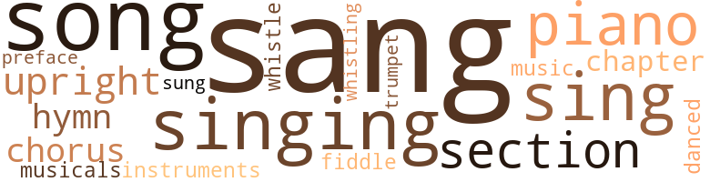
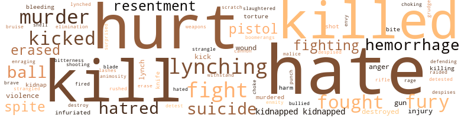
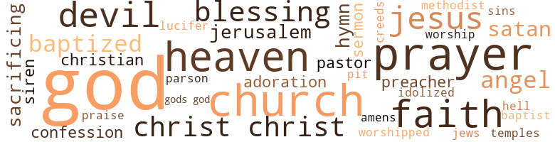

Your People Are My People, by Gaines, Edwina (1962)
77 music-related terms matched in this text.
Most frequent terms in this topic: sang (15); song (9); singing (8); piano (7); sing (7)
chapter.n.01
Definition: a subdivision of a written work; usually numbered and titled
| word | sentence |
|---|---|
| chapter | " I 've read the seventeenth chapter of Acts , beginning at the twenty-fourth verse through the twenty-eighth verse . |
| chapter | First she read a scripture from II Kings , twentieth chapter . |
chorus.n.01
Definition: any utterance produced simultaneously by a group
| word | sentence |
|---|---|
| chorus | Bianica directed the chorus while Gaynell accompanied on the piano . |
| chorus | They sang two verses and the chorus : Jesus loves me ! |
| chorus | The choir joined in the chorus . |
cornet.n.01
Definition: a brass musical instrument with a brilliant tone; has a narrow tube and a flared bell and is played by means of valves
| word | sentence |
|---|---|
| trumpet | " Gabriel blows his trumpet . |
dance.v.03
Definition: skip, leap, or move up and down or sideways
| word | sentence |
|---|---|
| danced | I was so carried away with hurt that objects danced in front of my eyes like a million stars . |
foreword.n.01
Definition: a short introductory essay preceding the text of a book
| word | sentence |
|---|---|
| preface | The preface of the book stated that these formulas and remedies were to be processed and used for the betterment of mankind , and that every race was included . |
hymn.n.01
Definition: a song of praise (to God or to a saint or to a nation)
| word | sentence |
|---|---|
| hymns | " Joshua , " he said to Gaynell , " would you have the children sing three hymns , please ? " |
| hymns | As we walked along , the silence was broken occasionally by our voices raised in hymns . |
| hymn | Gaynell and Bianica sang a hymn of dedication to our white friends : " He 'll Say well Done . " |
music.n.01
Definition: an artistic form of auditory communication incorporating instrumental or vocal tones in a structured and continuous manner
| word | sentence |
|---|---|
| music | She was n't an expert at the piano , but the music she 'd learned by ear sounded uplifting . |
musical.n.01
Definition: a play or film whose action and dialogue is interspersed with singing and dancing
| word | sentence |
|---|---|
| musicals | During the meeting , every head steward was asked to divide his church into tribes and to see that rallies , musicals , and other fund raising activities were carried out and the money deposited in the bank before the fifteenth of the next month . |
musical_instrument.n.01
Definition: any of various devices or contrivances that can be used to produce musical tones or sounds
| word | sentence |
|---|---|
| instruments | The degrees on both instruments were equivalent . |
piano.n.01
Definition: a keyboard instrument that is played by depressing keys that cause hammers to strike tuned strings and produce sounds
| word | sentence |
|---|---|
| piano | Bianica directed the chorus while Gaynell accompanied on the piano . |
| piano | You can sing and play the piano , and you 're a lover of humanity . |
| piano | She was n't an expert at the piano , but the music she 'd learned by ear sounded uplifting . |
| piano | She did love to sing and play the piano . |
| piano | " I guess I 'd better get up and get to work , " Gaynell said , rising from the piano bench . |
| piano | He also thought about the time he 'd beaten up Ashton Bagland over a debt on the church 's piano . |
| piano | Both groups shared services in the same edifice and both denominations had vowed to pay the note on the piano , since both denominations used it . |
section.n.01
Definition: a self-contained part of a larger composition (written or musical)
| word | sentence |
|---|---|
| section | I walked over near the orange section . |
| section | It was in the white section , since there were no openings of the kind in the section where my people worked . |
| section | Ai n't this the first time for you in this section ? " asked one of the men . |
| section | " How far is section G-East ? " asked Carl Daniels . |
| section | Having been reared in the northern and western states , I 'd attended school with colored boys and girls as a matter of course , as was the tradition of that section . |
sing.v.02
Definition: produce tones with the voice
| word | sentence |
|---|---|
| sing | When the day 's work was done and supper was ov er , we 'd play games , sing , sew , or read . |
| sang | His friends did n't seem to appreciate my presence , and they 'd whisper to each other and ignore questions Harold asked them , and even sang an insulting song : " i ai n't been to school a day in my life . |
| sang | Happy birthday to you Happy birthday to you , Happy birthday dear Father , Happy birthday to you , all the relatives and friends sang as tears of joy streamed down his face . |
| sing | " Joshua , " he said to Gaynell , " would you have the children sing three hymns , please ? " |
| sang | The children sang Newton 's choices : " When I 've Done the Best I Can , " " The storm is Passing Over , Halleluyah , " and " Canaan Land . " |
| sang | While they sang , he sat there free from notion . |
| sang | The girls sang some spiritual numbers , right out of the depths of their hearts . |
| sing | I began to sing , " Precious Lord , take my hand . |
| sang | The others joined in humming as I sang . |
| sang | The devotions included the One-Hundredth Psalm and the Lord 's Prayer , and the congregation sang , " Precious Lord , Take My Hand , " carrying my thoughts momentarily to our recent journey out of the damaged mine . |
| sang | The College Choir came out in their black and white dress and sang four numbers . |
| sang | Gaynell and Bianica sang a hymn of dedication to our white friends : " He 'll Say well Done . " |
| sing | You can sing and play the piano , and you 're a lover of humanity . |
| sang | They worked together and sang together and even fought their enemies together as one big happy family . |
| sing | She did love to sing and play the piano . |
| sang | After the scripture she played and sang the Lord 's prayer . |
| sang | Then she sang her favorite song : " Guide me , O thou Great Jehovah " by William Williams . |
| sang | They sang two verses and the chorus : Jesus loves me ! |
| sang | Sadly the choir sang " Nearer My God , to Thee " as the procession moved quietly behind the casket into the church . |
| sing | She 'll sing ' I 'm Bound for Canaan Land . ' " |
| sung | Another one of his favorite songs was sung by Sister Florence Flower - " Guide Me , Oh Thou Great Jehovah . " |
| sing | Reverend Barlow began to sing " The Life Boat 's Coming . " |
| sang | He rejoiced as he sang . |
singing.n.01
Definition: the act of singing vocal music
| word | sentence |
|---|---|
| singing | He passed a few yards from the ferry and noticed that the singing had ceased and the people looked somewhat taken aback . |
| singing | Sitting there I could hear the birds singing , and would try to identify the kind of bird it was . |
| singing | I heard them singing ' Blest Be the Tie That Binds . ' |
| singing | Feeling the spiritual effect of the demonstration , the audience burst out singing : " Blest be the tie that binds Our hearts in Christian love , The fellowship of kindred minds is like to that above . |
| singing | The program ended with the congregation singing the last two verses of the lie that binds : " This glorious hope revives Our courage by the way , While each in expectation lives , And waits to see the day . |
| singing | As we were moving along , it seemed as if I could hear our church choir singing : There will be a brighter day In the sweet bye and bye , Where sorrow will have passed away In the sweet bye and bye . |
| singing | Reverend Barlow led the congregation in singing " High Up in Jerusalem " . |
| singing | Newton rose rejoicing and singing , " All God 's Children Got a Crown . " |
song.n.01
Definition: a short musical composition with words
| word | sentence |
|---|---|
| song | Course the song would sound a bit mo ' pleasin ' if they 'd say ' Our Country ' instead of ' My Country ' . |
| song | His friends did n't seem to appreciate my presence , and they 'd whisper to each other and ignore questions Harold asked them , and even sang an insulting song : " i ai n't been to school a day in my life . |
| songs | After the songs , with a minimum of motion , he rose and looked around the room , as if to get everyone 's attention . |
| song | He even put a song in my mouth . |
| songs | Those three songs summarize eighty per cent of what I want to tell you . " |
| song | Then she sang her favorite song : " Guide me , O thou Great Jehovah " by William Williams . |
| song | " Just one more song ! " |
| song | " Thanks for the song , Gaynell , " he said politely . |
| song | That evening about seven o'clock , the family got together in song and prayer . |
| songs | Another one of his favorite songs was sung by Sister Florence Flower - " Guide Me , Oh Thou Great Jehovah . " |
| song | The song stirred the congregation until some shed tears , some fainted , and some shouted . |
| songs | " I had prayer and enjoyed many songs with the family . |
| song | - the words resounding into a song : ' Well done - Well done - Well done - Well done - Well done . ' |
upright.n.02
Definition: a piano with a vertical sounding board
| word | sentence |
|---|---|
| upright | " I 've made it a special hobby too , to learn about the virtues of the various races , because I 've proposed to mark the perfect man , and behold the upright ! |
| upright | Oh continue Thy loving-kindness unto them that know Thee ; And Thy righteousness to the upright . " |
| upright | We always tried to walk upright before our children . |
| upright | It was difficult for her to conceive that a person as kind , upright , and devout as her father would have to answer to death so soon . |
violin.n.01
Definition: bowed stringed instrument that is the highest member of the violin family; this instrument has four strings and a hollow body and an unfretted fingerboard and is played with a bow
| word | sentence |
|---|---|
| fiddle | " It 's obvious that Sparks is second fiddle in your life , " I said . |
whistle.v.01
Definition: make whistling sounds
| word | sentence |
|---|---|
| whistle | She was just writing another letter to Mr. Harold Smith when she heard the postman whistle . |
| whistling | " I knew they 'd be leaving in a few minutes so I went back a yard or two and started whistling as if I was just getting to the scene . |
250 violence-related terms matched in this text.
Most frequent terms in this topic: hate (22); hurt (21); kill (17); killed (14); fight (8)
abrasion.n.01
Definition: an abraded area where the skin is torn or worn off
| word | sentence |
|---|---|
| scratch | His son survived miraculously , without even a scratch . |
anger.n.01
Definition: a strong emotion; a feeling that is oriented toward some real or supposed grievance
| word | sentence |
|---|---|
| anger | What 's my business to you ? " she cried in anger . |
| anger | Some of them arc due to their surroundings , some from fear , or anger , and some from the lack of knowledge and understanding . |
| anger | From tradition you 'd been misled , through fear and anger and hatred . |
animosity.n.01
Definition: a feeling of ill will arousing active hostility
| word | sentence |
|---|---|
| animosity | She did n't mind my animosity but just stood there without replying . |
blast.v.03
Definition: use explosives on
| word | sentence |
|---|---|
| shell | I 'd shell the corn to make it convenient for the cows since they did n't have any front teeth in their upper jaws . |
bleeding.n.01
Definition: the flow of blood from a ruptured blood vessel
| word | sentence |
|---|---|
| hemorrhage | The knock did n't hurt so much , but the blow on my head as I hit the rock wall not only stunned me , but caused a slight hemorrhage . |
| bleeding | She rushed over to me and stopped the bleeding . |
| hemorrhage | just recovering from a hemorrhage myself I became sort of weak from watching her so helpless . |
| hemorrhage | " He 's had a hemorrhage ! " cried someone . |
| bleeding | " I want to see if it 's bleeding . " |
| hemorrhage | " Your father had an internal hemorrhage of the brain - a cerebral hemorrhage . |
| hemorrhage | " Your father had an internal hemorrhage of the brain - a cerebral hemorrhage . |
boomerang.n.01
Definition: a curved piece of wood; when properly thrown will return to thrower
| word | sentence |
|---|---|
| boomerangs | These usually act as boomerangs , returning to the sender rather than destroying the ones they 've been aimed at . |
bruise.n.01
Definition: an injury that doesn't break the skin but results in some discoloration
| word | sentence |
|---|---|
| bruise | He was upset about the bruise on her forehead from falling out of bed and had been going to press charges for negligence . |
butcher.v.01
Definition: kill (animals) usually for food consumption
| word | sentence |
|---|---|
| slaughtered | " Dear God , if I must be slaughtered , do n't let them drag my body . |
cannon.n.04
Definition: heavy automatic gun fired from an airplane
| word | sentence |
|---|---|
| cannon | They sounded like a war of cannon balls . |
contemn.v.01
Definition: look down on with disdain
| word | sentence |
|---|---|
| despises | Even God despises them . |
| despised | He despised it ! |
defy.v.01
Definition: resist or confront with resistance
| word | sentence |
|---|---|
| withstand | " Because somebody 'll have to go , and since I 'm the oldest in the family , and my strength is wearing down , I wo n't be able to withstand the many complications of life as I used to . |
destroy.v.04
Definition: put (an animal) to death
| word | sentence |
|---|---|
| destroy | I do n't ever want you to destroy or misplace it . |
| destroyed | Imagine spending money on moonshine that destroyed them in every way - physically , mentally , and morally . |
| destroyed | Not only was her physical make-up being destroyed , but her every being was crumbling to ruin like the falling of the Roman Empire . |
| destroyed | According to the map , however , the laboratory and tree which were the main sources of identifying the spot had been destroyed , and there seemed to be no evidence left to help locate the exact place . |
elimination.n.05
Definition: the murder of a competitor
| word | sentence |
|---|---|
| elimination | " It 's possible that it 'll remain in that area , or it might pass out through elimination , or it may lodge in the stomach or intestines . " |
enrage.v.01
Definition: put into a rage; make violently angry
| word | sentence |
|---|---|
| enraging | I do n't make it a habit of calling enraging names . |
envy.n.01
Definition: a feeling of grudging admiration and desire to have something that is possessed by another
| word | sentence |
|---|---|
| envy | I knew that all white men do n't have envy and hatred toward colored people . |
erase.v.01
Definition: remove from memory or existence
| word | sentence |
|---|---|
| erased | A questioning look flashed across his face , but was erased as quickly as it had appeared . |
| erased | But whether they 're my people or your people , there 's no sin that ca n't be erased through salvation and education , " I recommended . |
| erase | She went into the house and took a drink of liquor in an attempt to erase her confusing thoughts . |
| erased | Newton looked at the record and saw where some things had been erased and he was curious about these . |
| erased | " Those things that 's been erased - were those some things that I did ? " |
fight.n.05
Definition: a boxing or wrestling match
| word | sentence |
|---|---|
| fight | " On one occasion , I recall Brother Paul said , after his works on earth had been accomplished and his mission of preaching to the poor had been filled , T 've fought the good fight , I 've kept the faith , and I 've finished my course . ' |
| fight | So let 's forget , and fight for good health . |
fight.v.02
Definition: fight against or resist strongly
| word | sentence |
|---|---|
| defending | " Mr. Lily did tell me that , " said Gaynell , defending herself . |
| fight | We still have three weeks to go ; this means we must fight harder . |
| fought | They fought so often no one bothered to rescue her . |
| fighting | He stopped fighting with the blonde girl at his side and they both got out and staggered about , cursing each other . |
| fight | " I 'll fight it with all my might . " |
| fighting | " You may think I 'm not trying , or that I 'm lying when I tell you that I 've been and still am fighting this evil force . |
| fight | Rebellion was in her glassy eyes and she looked as if she were going to fight a snake . |
| fighting | I was beginning to feel that I was fighting a losing battle . |
| fought | They worked together and sang together and even fought their enemies together as one big happy family . |
| fight | " And I might as well use the time wisely , as the Bible said to do - ' Watch and fight . ' " |
| fought | " On one occasion , I recall Brother Paul said , after his works on earth had been accomplished and his mission of preaching to the poor had been filled , T 've fought the good fight , I 've kept the faith , and I 've finished my course . ' |
| fought | I 've fought and fought within myself to have my way about things in general , and if it were not for the Lord , I would be a self-man - meaning that I would steal , kill , betray , and do all manner of wickedness . |
| fought | I 've fought and fought within myself to have my way about things in general , and if it were not for the Lord , I would be a self-man - meaning that I would steal , kill , betray , and do all manner of wickedness . |
| fought | He 'd fought many fearful storms of life and won . |
| fighting | After fighting and pulling her through the woods , we finally reached the main road . |
| fight | Often we 'd quarrel and fight . |
| fight | " Do n't be afraid of things , just learn how to fight 'em , like you did Old Man Ben , " laughed Harold . |
fury.n.01
Definition: a feeling of intense anger
| word | sentence |
|---|---|
| fury | We 'd eaten about half our food when we saw , about thirty-five yards away , a bull full of fury , scraping the ground and making ready to attack us . |
| fury | You 're the one who thinks we 're too contaminated to associate with you , " I said as I advanced towards him with fury burning my insides . |
| fury | She was shaking with fury . |
| fury | Mrs. Boatwright bit her lip in fury before replying . |
| rage | " What ! " cried Daniels in a rage . |
| fury | And furthermore , her name is Gaynell , not Hazel , " I cried in fury . |
| fury | " I can see in the distance a fury cloud . |
gag.v.06
Definition: cause to retch or choke
| word | sentence |
|---|---|
| choking | The harder I worked , the more it seemed to get away , and choking became so severe , her breathing almost stopped . |
| choke | " Maybe it wo n't choke her so badly now , " Laura said . |
grudge.n.01
Definition: a resentment strong enough to justify retaliation
| word | sentence |
|---|---|
| grudge | Since my husband died , seems lack all you colored folks got a grudge ' g ' inst us . |
gun.n.01
Definition: a weapon that discharges a missile at high velocity (especially from a metal tube or barrel)
| word | sentence |
|---|---|
| gun | " I wish you 'd brought your gun . |
| gun | The school bus on which she and Bianica rode had just arrived at the entrance of Goodlow Village when there was heard in the distance gun play and angry shouts , revealing an unhealthy commotion . |
| guns | The children were shouting , " They were playing with their guns they got for Christmas . " |
hate.n.01
Definition: the emotion of intense dislike; a feeling of dislike so strong that it demands action
| word | sentence |
|---|---|
| hate | Yo 're willing fer me to overlook hate and spite , and yet you ca n't overlook color - something no ' un has control over but God . ' |
| hatred | I knew that all white men do n't have envy and hatred toward colored people . |
| hate | I jest hate to see a man killed fer nuthin ' . " |
| hatred | Now I was about to be destroyed by my own hand of hatred and heart of retribution . |
| hatred | From tradition you 'd been misled , through fear and anger and hatred . |
| hatred | " Today , since you tried to save my life , I know you 've risen above the fear and hatred that had been embedded in you . |
| hatred | Yet I had no hatred , certainly . |
hate.v.01
Definition: dislike intensely; feel antipathy or aversion towards
| word | sentence |
|---|---|
| hate | I wish , by God , it was slavery time , 'Cause I sho ' do hate a nigger . " |
| hate | " You do n't hate me for it , Ernest , do you ? " he asked sincerely . |
| hate | " No , sir , Mr. Washington , I do n't hate any man for anything . |
| hate | I may get disgusted with them , but I do n't hate them . |
| hates | " She resents people so badly , " I thought to myself , " she even hates to pass through the same door with them . " |
| hate | " And the nerve of a Southern white man who styles himself as being above the so-called scum of the human race , the Negro , having the audacity to sneak into a secluded place to enjoy what you publicly hate , deny , and do n't let the world know you crave almost as much as life itself , " I said to him . |
| hate | " I do n't hate white people , or anyone , for that matter , " I replied . |
| hate | You must hate your race . " |
| hate | I really hate to leave them . |
| detest | " I have half an hour to get to work and I detest being late . |
| hate | " Mrs. Heinz , " said Gaynell , dropping her head in despondency , " I hate to see Beverly die . |
| hate | I hate to worry you - " " It 's dark now . |
| hate | ' Do good to them that hate you and pray for those who despitefully use you , ' he 'd say when we complained about false friends . |
| hate | Anything is fair as long as the other fellow is the victim I do n't hate you for doing those mean things because prayers were sent up and a deliverer was sent to see that we were freed - one of your own people , too - Mr. Lincoln . |
| hate | I learned to love those who hate me and to pray for those who despitefully use me . |
| hate | " I hate to think about it , " she said . |
| hate | I 'd never intended for my mind to be so low as to hate people because of the pigment of their skin . |
| hate | " I hate to have you spend any more money on me , " she said . |
| hate | Maybe you hate me for this . |
| hate | Gaynell , you 're loyal and most devoted to people you love , but you seem to hate your enemies terribly . |
| hates | Everybody loves his people - and hates to see them go - on a long trip , much less on an eternal one . |
| detested | " You know how I detested old silly J.B . |
| hate | Do good to those that hate you , and pray for those who despitefully use you , and above all , remember that vengeance is mine . " |
| hate | I hate everything , everything ! |
| hated | " Before I met him - I hated colored people - all colored people , because they were colored . |
| hates | That 's why he hates colored people so . |
hostility.n.02
Definition: a state of deep-seated ill-will
| word | sentence |
|---|---|
| enmity | He came towards me with enmity in his eyes . |
hurt.v.04
Definition: cause damage or affect negatively
| word | sentence |
|---|---|
| hurt | " Gaynell , I do n't want to hurt your feelings . |
infuriate.v.01
Definition: make furious
| word | sentence |
|---|---|
| infuriated | They were so infuriated that they planned to get me if they had to get every male Negro in our community . |
| infuriated | When he had learned that Nurse Walker was going to work with him , he became infuriated . |
injury.n.01
Definition: any physical damage to the body caused by violence or accident or fracture etc.
| word | sentence |
|---|---|
| injury | I knew there 'd be trouble if the owner found out I 'd caused the injury to such a prized animal . " |
| injury | Everyone was hurt , including myself ; however my injury was slight in comparison to the others . |
| hurt | He frowned deeply , the hurt showing in his eyes . |
| harm | Father is n't capable of doing any harm to anyone . |
| hurt | She noticed the hurt expression on his face . |
| hurt | The worst part was that she 'd cut her long hair ; that hurt . |
| injury | She must have fallen on her nose , but it seems all right now , " said Laura as she examined her face and the rest of her to see if there was any evidence of injury . |
| hurt | I was so carried away with hurt that objects danced in front of my eyes like a million stars . |
| harm | " I do n't mean no harm , Gaynell . |
kick_back.v.02
Definition: spring back, as from a forceful thrust
| word | sentence |
|---|---|
| kick | " I do n't mean to rebuke you , but there comes a time when one just ca n't kick against the pricks , " she said gravely . |
| kicked | He turned around and kicked the first colored person he found , which was me . |
| kick | " What did you kick me for ? " |
| kicked | They laughed in triumph as they dragged the man out of the cell and kicked him for falling . |
| kicked | And he walked over and kicked me almost down . |
| kick | Or she 'd kick her little feet and laugh as if someone were tickling her . |
| kicked | She could n't stand still , and often kicked the pail when it was nearly filled . |
| kicked | She not only kicked the pail and destroyed all the milk , but also kicked me a terrible blow on my right leg . |
| kicked | She not only kicked the pail and destroyed all the milk , but also kicked me a terrible blow on my right leg . |
kidnap.v.01
Definition: take away to an undisclosed location against their will and usually in order to extract a ransom
| word | sentence |
|---|---|
| kidnap | " Maybe they 're going to get him drunk so they can kidnap me from here , " I thought . |
| kidnap | " She even told Mama that Mr. Lily said he saw two white men kidnap you yestiddy mornin ' . |
| kidnapped | " Well , everybody else said it was a lie about you being kidnapped . |
| kidnapped | " Why did you say I was kidnapped ? " |
| kidnapped | When you disappeared , or when people like you disappear , then they must have been kidnapped , 'cause they would have told somebody where they w ere going , otherwise . |
| kidnapped | I betcha I 'd ' a been scared to death if somebody kidnapped me . |
| kidnapped | Were you real scared , Father , when they kidnapped you ? " she asked . |
kill.v.10
Definition: cause the death of, without intention
| word | sentence |
|---|---|
| killed | After hitting him he laughed to himself in triumph , but he did n't get very far before he almost killed himself by running off that steep hill down near the river . |
| killed | You probably would have been hurt or even killed , and your deaths would 've been a terrible loss to the colored people of Salem . |
| kill | The blows they gave him were enough to kill a mule , but somehow he kept living . |
| kill | You know , since you 're so sick , I should n't tell you this , but one time - I started to kill a white man - because he had tried to attack my mother . |
| kill | ' Thou shalt not kill ' it said . |
| kill | " My God , my God , " he uttered piteously , " please kill me . |
| Kill | Kill me . " |
| killed | Course , ai n't nothin ' yo ' family could do but git killed wid you if dey interrupted dat . |
| killed | I jest hate to see a man killed fer nuthin ' . " |
| killed | " I saw another one whose son got killed from tampering ' round wid some kerosene his dad 'd bought to use on a nigger . ' |
| killed | They 'll even say I killed the jailer . |
| killed | He 's been killed . " |
| killed | " Naw , I do n't know ' im , but seems lack everythang is contrary and I kai n't help thanking ' bout we killed Old Timer . " |
| Kill | Kill us all ? " asked the leader , jumping for the wheel . |
| killed | I never attempted to dispute the statement : " Goodlow , Alabama November 24 , 1923 Five persons were injured , one killed , when their station wagon plowed into one of the coal cars of train number 460 . |
| kill | I hope to God it wo n't kill her ! " she cried earnestly . |
| killed | If we did n't hear it , we 'd get uneasy , thinking one or the other might have been killed . |
| killed | If that snake had n't got him , he 'd have killed you . |
| killed | It 's pretty certain that some have been killed . " |
| killed | A large number were either injured or killed . |
| kill | If it is found out that he 's my friend , the gang 'll kill him . |
| kill | Folks kai n't pick ' er up lessen yo ' act like they 's gon na kill ' er . |
| kill | I 've fought and fought within myself to have my way about things in general , and if it were not for the Lord , I would be a self-man - meaning that I would steal , kill , betray , and do all manner of wickedness . |
| kill | That was the day Harold came to warn me of his uncle 's plot to kill me . |
| killing | " I 'll be lynched just as quickly for striking him as I would be for killing him . " |
| kill | Another voice spoke to me in a whisper , " Thou shalt not kill . |
| kill | We 'd both threatened to kill each other , so it was said that I 'd beaten her to the draw . |
| kill | " The one that says Thou shalt not kill ' . " |
| killed | " I never killed anyone , " he objected . |
| kill | " No , you did n't kill anyone - but you thought about doing so once . |
| kill | " ' Thou shall not kill , ' " he said . |
| kill | He remembered how he 'd attempted to kill Ben Smith for attacking his mother . |
| kill | " ' Thou shall not kill . ' |
killing.n.02
Definition: the act of terminating a life
| word | sentence |
|---|---|
| killing | " I did n't want to go along with this type of killing , but I had no alternative . |
| kill | She rushed up to me like a big bear ready for the kill . |
knife.n.02
Definition: a weapon with a handle and blade with a sharp point
| word | sentence |
|---|---|
| knife | He handed it to her with his pocket knife . |
| knife | She poured alcohol on the knife blade to sterilize it and made an X-shaped cut through each fang mark . |
lynch.v.01
Definition: kill without legal sanction
| word | sentence |
|---|---|
| lynch | They were going to lynch me . |
| lynch | They became vicious in their methods and began to torture and lynch . |
| lynch | " These Klansmen also torture and lynch people whose behavior they do n't like . |
| lynching | This is not an invitation for a lynching party , " I reminded him . |
| lynched | " I 'll be lynched just as quickly for striking him as I would be for killing him . " |
lynching.n.01
Definition: putting a person to death by mob action without due process of law
| word | sentence |
|---|---|
| lynching | I had to laugh in spite of myself , knowing how disappointed the lynching boys must have been . |
| lynching | " I had no idea of the destructive measures of the organization until I came face to face with a lynching . |
| lynching | To be a full-fledged member of this organization , you had to participate in the lynching of a Negro , " said Mr. Washington . |
| lynching | The lynching took place in Mississippi and I could n't stand the idea of living in that state any longer . |
| lynching | " Something shocking happened to five of the offenders who took part in the lynching , " continued he . |
| lynching | " A month after the lynching , a very peculiar thing occurred . |
| lynching | Ya act like dis is the first lynching ya 've ever done ! " said the leader . |
malice.n.01
Definition: feeling a need to see others suffer
| word | sentence |
|---|---|
| spite | Yo 're willing fer me to overlook hate and spite , and yet you ca n't overlook color - something no ' un has control over but God . ' |
| spite | I had to laugh in spite of myself , knowing how disappointed the lynching boys must have been . |
| spite | Really , in spite of this handshake , I still b ' lieve yo 're a nigger . " |
| spite | But I fell in love with the place in spite of all the complications . |
| malice | His face began to reflect cunning and malice . |
murder.n.01
Definition: unlawful premeditated killing of a human being by a human being
| word | sentence |
|---|---|
| murder | " I could be charged with murder . |
| murder | I had murder in my heart too . |
| murder | " You know that would be murder on my part . |
| murder | On the way there I had occasion to meet the doctor that thought enough of my daughter to help clear her of murder . |
| murder | I was accused and convicted of murder because I was the only one who did n't take sick . |
| murder | Newton 's mind flashed back to the day he attempted to murder a man . |
| murders | " Do n't you see here where you repented for those two attempted murders ? " |
murder.v.01
Definition: kill intentionally and with premeditation
| word | sentence |
|---|---|
| murdered | He 'll probably think many ugly things - like I 've murdered somebody or I 've done something awfully bad . |
| murdered | She 'd be screaming as if she were being murdered . |
musket_ball.n.01
Definition: a solid projectile that is shot by a musket
| word | sentence |
|---|---|
| balls | They sounded like a war of cannon balls . |
| ball | We had played ball with the neighbors ' children on a back lot diamond , too . |
| ball | I got her red ball and stood six feet from her . |
| ball | " They could n't play ball a li ' l bit , " she cried . |
| balls | She put moth balls in as she packed . |
open_fire.v.01
Definition: start firing a weapon
| word | sentence |
|---|---|
| fired | You can tell me if they fired you or something and I would n't mention it . |
pain.v.02
Definition: cause emotional anguish or make miserable
| word | sentence |
|---|---|
| hurt | You probably would have been hurt or even killed , and your deaths would 've been a terrible loss to the colored people of Salem . |
| hurt | However , I was going to attend it anyway , but a helping hand would n't hurt , and I 'd get finished earlier . |
| hurt | Most of our chickens were dead and our cattle had hurt themselves . |
| hurt | Everyone was hurt , including myself ; however my injury was slight in comparison to the others . |
| hurt | They wo n't hurt me ! " she cried . |
| hurt | Gaynell was hurt too , but she did n't forget that death was hovering over another little one . |
| hurt | Those rods do n't hurt any more . |
| hurt | It seemed as if I 'd been hurt and was going to die . |
| hurt | The knock did n't hurt so much , but the blow on my head as I hit the rock wall not only stunned me , but caused a slight hemorrhage . |
| hurt | " He hurt you badly , " said Gaynell . |
| hurt | " I guess it wo n't hurt anything . |
| hurt | I did n't hurt the thang . |
| hurt | " Well , one more wo n't hurt , " she said , reseating herself . |
| hurt | " It does n't hurt anymore , " said she . |
| hurt | " I was hurt when he told me that . |
| hurt | " Poor Lonny said he was n't terribly hurt at first . |
pistol.n.01
Definition: a firearm that is held and fired with one hand
| word | sentence |
|---|---|
| pistol | " You take this pistol for protection . |
| pistol | " You mean your enemy , " she said , checking the pistol for bullets . |
| pistol | " I 'll work on him while you keep watch for that snake , " Gaynell said , handing Bianica the pistol . |
| pistols | The minute they climbed over the fence , because Newton had put a lock on the gate , Newton 's boys started firing their pistols just for warning . |
punch.n.01
Definition: (boxing) a blow with the fist
| word | sentence |
|---|---|
| punch | The six tables looked like a public exhibition , with Hawaiian punch and many other drinks , fruit salad and meat salads of all kinds , pies , cakes , cookies , barbecued chicken , bread , vegetables , and ice cream . |
raid.v.01
Definition: search without warning, make a sudden surprise attack on
| word | sentence |
|---|---|
| raided | " The deputies raided the house and booked everybody there ! " exclaimed Sister Beal . |
resentment.n.01
Definition: a feeling of deep and bitter anger and ill-will
| word | sentence |
|---|---|
| bitterness | The bitterness made tears pop out of my eyes . |
| resentment | She increased her walking speed , displaying her resentment of my presence . |
| resentment | I witnessed what I judged to be an indecent petting spree , and my mind became subject to resentment , prejudice and revenge . |
| resentment | I figure there must always be something more or less to remind us of their resentment . |
| resentment | Gaynell was so full of resentment at the moment that she did n't want any favors from any white people , but the rejection had left her so nervous that she could hardly walk . |
rifle.n.01
Definition: a shoulder firearm with a long barrel and a rifled bore
| word | sentence |
|---|---|
| rifle | The next time you write , do n't send a book , but send a toy rifle . |
rush.v.02
Definition: attack suddenly
| word | sentence |
|---|---|
| rushed | " This girl must be rushed to the hospital at once . |
shoot.v.02
Definition: kill by firing a missile
| word | sentence |
|---|---|
| shot | You shot him in the back ? " |
| shot | " Duke 's been shot in the leg , " said one , referring to one of my grandchildren . |
shooting.n.02
Definition: killing someone by gunfire
| word | sentence |
|---|---|
| shooting | I do n't want any shooting unless it 's very necessary . |
sting.n.03
Definition: a painful wound caused by the thrust of an insect's stinger into skin
| word | sentence |
|---|---|
| bite | " Guess we 'll pull to the side and have a bite to eat . " |
| bite | The bite was on his left leg , above the ankle . |
storm.v.05
Definition: attack by storm; attack suddenly
| word | sentence |
|---|---|
| Surprised | " Surprised at seeing me in Heaven ? " asked Newton . |
strangle.v.01
Definition: kill by squeezing the throat of so as to cut off the air
| word | sentence |
|---|---|
| strangle | I thought surely they 'd strangle him to death before they 'd accomplish their aim , but they made it quite successfully . |
| strangled | Some who had gone in before me came out shivering , or slightly strangled . |
strong-arm.v.02
Definition: be bossy towards
| word | sentence |
|---|---|
| bullied | He played hookey , bullied the young boys , put lizards in the teacher 's desk , and grinned with every girl that wfould grin with him . |
suicide.n.01
Definition: the act of killing yourself
| word | sentence |
|---|---|
| suicide | She was sent away , and later Hank committed suicide . |
| suicide | I 'd much rather commit suicide first . |
| suicide | There was also another article which stated that Mr. Searl Dooley , the jailer , had been suffering from an incurable disease and from all indications had committed suicide by hanging himself by the neck . |
| suicide | I feel like committing suicide . |
| suicide | ' Dey once thought I did it , trying ' to commit suicide . |
sword.n.01
Definition: a cutting or thrusting weapon that has a long metal blade and a hilt with a hand guard
| word | sentence |
|---|---|
| blade | She poured alcohol on the knife blade to sterilize it and made an X-shaped cut through each fang mark . |
torment.v.01
Definition: torment emotionally or mentally
| word | sentence |
|---|---|
| torture | They became vicious in their methods and began to torture and lynch . |
| torture | " These Klansmen also torture and lynch people whose behavior they do n't like . |
violence.n.01
Definition: an act of aggression (as one against a person who resists)
| word | sentence |
|---|---|
| violence | The sound of violence upset everyone on the bus . |
| violence | Civil privileges should be enjoyed by everyone , and violence is like unto this parable : A group of different races of men were assigned to do many jobs together . |
| violence | She did n't know what became of the enemies , but after that night they never encountered any more violence as a family . |
weapon.n.01
Definition: any instrument or instrumentality used in fighting or hunting
| word | sentence |
|---|---|
| weapons | Number five , regardless of the outcome , we will resort only to words as our weapons . |
weather.v.01
Definition: face and withstand with courage
| word | sentence |
|---|---|
| brave | " That was a very brave deed . " |
whip.v.04
Definition: strike as if by whipping
| word | sentence |
|---|---|
| lashes | My mother was a very beautiful mulatto woman of thirty-five , with brown eyes and extra long eye lashes . |
wound.n.01
Definition: an injury to living tissue (especially an injury involving a cut or break in the skin)
| word | sentence |
|---|---|
| wound | She bathed my foot in Epsom salts and applied a piece of fat-back to the wound . |
| wound | She tied a bandage tightly above the wound and painted it with iodine . |
| wound | Between times , she covered the wound with epsom-salt compresses . |
230 religion-related terms matched in this text.
Most frequent terms in this topic: God (76); church (17); prayer (13); faith (13); Christ (11)
amen.n.01
Definition: a primeval Egyptian personification of air and breath; worshipped especially at Thebes
| word | sentence |
|---|---|
| Amens | Amens went up from the crowd . |
baptist.n.01
Definition: follower of Baptistic doctrines
| word | sentence |
|---|---|
| Baptist | Newton , who was Methodist by faith , had been quarreling with Ragland who was Baptist . |
baptize.v.01
Definition: administer baptism to
| word | sentence |
|---|---|
| baptized | " I was converted on a Friday night in the month of November and was baptized the following Sunday morning at ten o'clock . |
| baptized | " I was the last of eight candidates to be baptized . |
| baptized | If Mother had not been there , I 'm sure I would have abandoned the idea of being baptized . |
| baptized | There were two more to be baptized before me when I drew near the edge of the lake and stood there pondering whether I should go through with it or not . |
| baptized | He was converted in July , 1910 , and baptized by the later Reverend Dewitt Rogues . |
blessing.n.05
Definition: the act of praying for divine protection
| word | sentence |
|---|---|
| blessings | Around the table everyone sent up his special prayer of thanks for his many many blessings . |
| blessing | When each had been seated , his best friend , William Smith , invoked the blessing upon the house . |
| blessing | We gave thanks to God for our blessing . |
| blessings | I want him to have time to speak about how he and his team worked together and how the Lord sent His blessings through our white friends . |
| blessing | The doctor said he 'd recommend you to that famous hospital , and that will be a great blessing . |
| blessings | " More of us ought to count our blessings , " he encouraged . |
christian.n.01
Definition: a religious person who believes Jesus is the Christ and who is a member of a Christian denomination
| word | sentence |
|---|---|
| Christian | That 's what I call a real Christian - acting way beyond the call of duty . |
| Christian | He is a true example of a Christian - really Christ-like . |
church.n.02
Definition: a place for public (especially Christian) worship
| word | sentence |
|---|---|
| church | On Sundays they go to church . |
| church | During the meeting , every head steward was asked to divide his church into tribes and to see that rallies , musicals , and other fund raising activities were carried out and the money deposited in the bank before the fifteenth of the next month . |
| church | Being head steward in my church , I divided us into two equal groups . |
| church | If you start doing things like that , very soon you 'll be going from bad to worse , and the next thing you know , you 'll be out of the church ; what does it profit a man to gain the world and lose his soul ? |
| church | If it ai n't fo ' themselves , it 's fo ' the church . |
| church | He loved to follow Newton to church . |
| church | You 're doing fine , and soon you 'll be walking around going back to church and working in the garden . " |
| church | At least he went to church regularly and was very active there . " |
| church | The distant church bell could be heard telling out another earthly loss , a heavenly gain . |
| church | " But all these no-good , mean-hearted guys , some who 've deserted their families and never even think about God , much less the church , are left here . |
| church | " I want you to always go to church . |
| church | Someone began to toll the church bell . |
| church | Sadly the choir sang " Nearer My God , to Thee " as the procession moved quietly behind the casket into the church . |
| church | I tried to convince him that he was doing fine and would soon be back to church . |
church.n.04
Definition: the body of people who attend or belong to a particular local church
| word | sentence |
|---|---|
| church | I was passing by a certain church the other night and the people were preparing to adjourn . |
| church | As we were moving along , it seemed as if I could hear our church choir singing : There will be a brighter day In the sweet bye and bye , Where sorrow will have passed away In the sweet bye and bye . |
| church | He also thought about the time he 'd beaten up Ashton Bagland over a debt on the church 's piano . |
confession.n.05
Definition: the document that spells out the belief system of a given church (especially the Reformation churches of the 16th century)
| word | sentence |
|---|---|
| confession | On his death bed he had poured out his confession . |
| confession | " I was released from bondage after this confession , " said Mr. McNeal . |
creed.n.01
Definition: any system of principles or beliefs
| word | sentence |
|---|---|
| creeds | Spose you start overlookin ' a few thangs fer a change , such as color , race , and creeds . " |
curate.n.01
Definition: a person authorized to conduct religious worship
| word | sentence |
|---|---|
| Parson | I had a way of finding out about you - just by watching your habits , your work , and your honesty , I changed my name , too , after coming here - my real name is Jacob Parson . " |
| pastor | The pastor was announced . |
| pastor | " I can tell your footsteps anywhere , ' said he , turning to face his pastor . |
eden.n.01
Definition: any place of complete bliss and delight and peace
| word | sentence |
|---|---|
| heaven | " God that made the world and all things therein , seeing that He is Lord of heaven and earth , dwelleth not in temples made with hands ; " Neither is worshipped with men 's hands , as though He needed any thing , seeing He giveth to all life , and breath , and all things ; " And hath made of one blood all nations of men for to dwell on all the face of the earth , and hath determined the time before appointed , and the bounds of their habitation ; " That they should seek the Lord , if haply they might feel after Him , and find Him , though He be not far from everyone of us : " For in Him we live , and move , and have our being ; as certain also of your own poets have said , ' For we are also His offspring . ' " |
| heaven | She took her Bible and read Matthew 5 : 34-37 : " ' But I say unto you , Swear not at all ; neither by heaven ; for it is God 's throne : Nor by the earth ; for it is his footstool : neither by Jerusalem ; for it is the city of ( he great King . |
| heavens | Who has set Thy glory above the heavens ? |
| heavens | Thy mercy , O Lord , is in the heavens , And Thy faithfulness reacheth unto the clouds . |
| heaven | " Father in heaven , fill his heart with universal love , " I silently prayed . |
| heaven | The breathtaking part was that they extended from earth to heaven . |
| Heaven | " Father in Heaven , " I cried , " I know you can and I believe you will deliver us from this pit of hell . |
| heaven | " I 'll not leave this place tonight until I 've heard from heaven , " I said . |
| Heaven | After Mr. McNeil 's story , Brother and Sister Alonzo Osborne gave a duet entitled " What are They Doing in Heaven Today ? " |
| Heaven | " On the way to Heaven I can see them taking on hundreds of heavenly-bound passengers , " said Reverend Barlow . |
| heaven | " I kin see Brother Jones now , walkin ' ' round heaven , shakin ' hands with friends and loved ones - shoutin ' , ' Trouble 's over ! |
| heaven | Reverend Barlow kept looking away to heaven as if it were right in hand-reach . |
| Heaven | Fancy you being a gate keeper in Heaven . " |
| heaven | 1 want to show you around heaven before the feast . " |
| Heaven | " Surprised at seeing me in Heaven ? " asked Newton . |
god.n.03
Definition: a man of such superior qualities that he seems like a deity to other people
| word | sentence |
|---|---|
| God | It is a symbol of God Himself . |
| God | As I got ready for bed , I felt a little relieved as I heard my mother in prayer asking God to watch over us . |
| God | Yo 're willing fer me to overlook hate and spite , and yet you ca n't overlook color - something no ' un has control over but God . ' |
| God | " How do you know then that He is God ? " |
| God | He has the attitude of God . |
| God | If Mr. Ben knew God as his brother does , he 'd be a changed man and a Godly one . |
| God | That 's the way you have to believe that God is God , and that He is supreme . |
| God | It made me feel sort of safe to hear her ask God to take care of me , little Nute . |
| God | I woke up before the crack of day and decided to give thanks to God for my deliverance . |
| God | I wish , by God , it was slavery time , 'Cause I sho ' do hate a nigger . " |
| God | She took her Bible and read Matthew 5 : 34-37 : " ' But I say unto you , Swear not at all ; neither by heaven ; for it is God 's throne : Nor by the earth ; for it is his footstool : neither by Jerusalem ; for it is the city of ( he great King . |
| God | But when , only God knows . " |
| God | Even God despises them . |
| God | Maybe Mother 's God placed the money in my possession purposely because He wanted me to have it , not Mr. Washington . |
| God | People where I 'd come from would say when a person had to suffer afflictions , that it was a punishment from God for one 's sins . |
| God | " I do n't know much about God , but I believe he 'll forgive all sin - ' specially if you did n't do it on your own . " |
| God | I thought how wonderful if only God 's healing hand would reach down and touch him . |
| God | God is the only one that does n't make mistakes . |
| God | I got into this and I guess God will have to get me out . |
| God | I hope to God it wo n't kill her ! " she cried earnestly . |
| God | " Brother , I really believe you confused God with man . |
| God | God has n't told you , one time , any certain place you should live . |
| God | I do n't have too much to do about what Brother Bolden does - though one thing is certain - the bishop is n't going to approve of this , and I 'm sure God wo n't like it . |
| God | When I hear you talking like that , I know that you 're not trusting God with all your mind , soul , and strength . " |
| God | Through them I learned about your God and my God . |
| God | Ca n't you see God planned it that way ? |
| God | Those are n't God 's doings , mind you . |
| God | That 's God 's revenge . " |
| God | " You 'd be surprised to know that God does n't work that way . " |
| God | Without lights I found it necessary to trust God more . |
| God | " If we all get together in our thoughts and believe that God will deliver us , He 'll do just that , " I urged . |
| God | " We 're going to ask God to help us find a way out of this , too . " |
| God | " Well , God made man , and He controls man 's thoughts , whether they 're good or bad , so that still puts God in the midst of everythang . " |
| God | " Well , God made man , and He controls man 's thoughts , whether they 're good or bad , so that still puts God in the midst of everythang . " |
| God | The pain was severe , but God gave me enough strength to hold out until every person had been accounted for . |
| God | I felt that was the way God wanted it when the words were uttered , " Whosoever will be chief among you , let him be your servant . " |
| God | " I 'll have to admit that God is the author and finisher of things , but He does give man the will to follow the right or wrong , the good or the evil . |
| God | We gave thanks to God for our blessing . |
| God | We had all learned a lesson because of their experience : if God be for you , what can be against you ? |
| God | He said that God was on our side and we could n't lose . |
| God | Since he is a Child of the Most High , God now makes him heir to a crown . |
| God | May God ever smile upon you and may God bless you . |
| God | Less than twenty-four hours ago , I 'd been sick unto death , but God had spared me to finish my work . |
| God | In my sickness I 'd surrendered everything to God . |
| God | " You know the other night when you found me praying , I asked God to exchange my life for yours . |
| God | Why would you ask God to do a thing like that ? " she cried . |
| God | And now since I know that you 'll rely on God 's guidance , I wo n't have to worry about you and the others any more , " I said . |
| God | God has wonderfully blessed me from my earliest existence to the present . " |
| God | My life has not been without fault , of course , since only God is faultless . |
| God | They are : recognition of the Fatherhood of God and the Brotherhood of Man . |
| God | The day or the hour I was n't sure of , for no man knows the day or hour that the Son of God cometh . |
| God | I thank God that He exalted me to higher ground . |
| God | She jumped out of bed , dressed hurriedly , and went into the living room for a few moments to give praise and adoration to God . |
| God | After turning his face to the wall and praying , God heard Hezekiah 's supplication , healed him , and lengthened his life for fifteen years . |
| God | " It must be God , " said Gaynell guiltily . |
| God | Now she felt cheated by death and was momentarily resentful of God 's power over life and death . |
| God | " But all these no-good , mean-hearted guys , some who 've deserted their families and never even think about God , much less the church , are left here . |
| God | " I 'll never forget that evening , May 15 , 1912 , when Reverend Benedict asked me , ' Do you take this man to be your lawful husband , and do you solemnly promise before God and these witnesses that you will love , honor , and keep him , in sickness and in health , and forsaking all others , keep thee only unto him so long as you both shall live ? ' |
| God | It seems only yesterday when he asked , ' Do you , Newton Jones , take this woman to be your lawful wife , and do you promise before God and these witnesses to love her , comfort her , honor and keep her , in sickness and in health , and forsaking all others , keep thee only unto her so long as you both shall live ? ' |
| God | ' What , therefore , God has joined together , let no man put asunder ! ' |
| God | " Has God ever done anything wrong ? " he asked , looking her directly in the eyes . |
| God | I asked God for only one husband - and He 's granted that . |
| God | " Love the Lord thy God with all thy soul and all thy strength , and thy neighbor as thy self . |
| God | His heavy heart was humble , and grateful to God . |
| God | Never put anything before God and His service . |
| God | She would stop for a moment to rebuke death , and question God about Newton 's death . |
| God | " Try to understand , Gaynell , how good God has been to all of us . |
| God | He was devout and devoted to God and his fellowmen . |
| God | We plan , but God unplans . |
| God | The water comes up around his knees , then his waist , then up to his neck - I kin hear him yellin ' from fear , ' My God and my Lord - have Thou forsaken me ? ' |
| God | It seemed as if God had wiped them all away . |
| gods | Newton held his breath as the keeper evaluated him : " ' Thou shall have no other gods before me , ' - O.K. " ' Thou shall not take the name of the Lord thy God in vain , ' - O.K. " ' Remember the sabbath day , to keep it holy , ' - O.K. " ' Honour thy father and thy mother , ' - O.K. Newton began to shake , knowing what the next commandment would be . |
| God | Newton held his breath as the keeper evaluated him : " ' Thou shall have no other gods before me , ' - O.K. " ' Thou shall not take the name of the Lord thy God in vain , ' - O.K. " ' Remember the sabbath day , to keep it holy , ' - O.K. " ' Honour thy father and thy mother , ' - O.K. Newton began to shake , knowing what the next commandment would be . |
| God | Newton rose rejoicing and singing , " All God 's Children Got a Crown . " |
| God | God was sitting at the head of the table , which was prepared with milk and honey . |
| God | " The seat at the left of God is for you , " said Harold . |
| God | " Do I get a chance to sit that close to God ? " |
grace.n.06
Definition: a short prayer of thanks before a meal
| word | sentence |
|---|---|
| blessings | I was just counting my blessings when you came in , ' he said . " |
hell.n.01
Definition: any place of pain and turmoil
| word | sentence |
|---|---|
| hell | I had my belief , however , that the tree , even though it was beautiful , was a demon back from hell to torment the boy 's enemies . |
hell.n.03
Definition: (Christianity) the abode of Satan and the forces of evil; where sinners suffer eternal punishment; - John Milton; ; -Dr. Johnson
| word | sentence |
|---|---|
| pit | " Father in Heaven , " I cried , " I know you can and I believe you will deliver us from this pit of hell . |
hymn.n.01
Definition: a song of praise (to God or to a saint or to a nation)
| word | sentence |
|---|---|
| hymns | " Joshua , " he said to Gaynell , " would you have the children sing three hymns , please ? " |
| hymns | As we walked along , the silence was broken occasionally by our voices raised in hymns . |
| hymn | Gaynell and Bianica sang a hymn of dedication to our white friends : " He 'll Say well Done . " |
idolize.v.01
Definition: love unquestioningly and uncritically or to excess; venerate as an idol
| word | sentence |
|---|---|
| idolized | Laura had n't been jealous because Gaynell had idolized her father . |
jerusalem.n.01
Definition: capital and largest city of the modern state of Israel (although its status as capital is disputed); it was captured from Jordan in 1967 in the Six Day War; a holy city for Jews and Christians and Muslims; was the capital of an ancient kingdom
| word | sentence |
|---|---|
| Jerusalem | She took her Bible and read Matthew 5 : 34-37 : " ' But I say unto you , Swear not at all ; neither by heaven ; for it is God 's throne : Nor by the earth ; for it is his footstool : neither by Jerusalem ; for it is the city of ( he great King . |
| Jerusalem | As they near the City of Jerusalem , its glory is great and luminous . |
| Jerusalem | Reverend Barlow led the congregation in singing " High Up in Jerusalem " . |
jesus.n.01
Definition: a teacher and prophet born in Bethlehem and active in Nazareth; his life and sermons form the basis for Christianity (circa 4 BC - AD 29)
| word | sentence |
|---|---|
| Jesus | Jesus loves me , loves me still , Though I may be weak and ill ; From his shining home on high Comes to watch me where I lie . |
| Jesus | Is it true that Jesus wept at the grave of Lazarus ? |
| Jesus | He stands near Jesus and feels secure . |
| Jesus | " ' What took you so long , Captain Jesus ? ' |
| Jesus | " Brother Jones clasps Jesus ' hand in love , honor , and gratitude . |
| Jesus | Jesus is the one who gives them out . " |
| Jesus | Jesus was sitting on a throne with Harold Smith as his attendant . |
| Jesus | Jesus rose to meet Newton . |
| Jesus | " My Lord and my King , " Newton said , as he fell at Jesus ' feet . |
jew.n.01
Definition: a person belonging to the worldwide group claiming descent from Jacob (or converted to it) and connected by cultural or religious ties
| word | sentence |
|---|---|
| Jews | It was directed against Jews , Catholics , foreigners , and Negroes . |
messiah.n.01
Definition: any expected deliverer
| word | sentence |
|---|---|
| Christ | Bob was what you 'd call a Pontius Pilate ; Pontius had the authority to speak against the crucifixion of Christ , but was reluctant to do so . |
| Christ | " ' They call me Christ , ' said he . |
| Christ | " ' Christ , ' I repeated in disbelief . |
| Christ | ' But you do n't look like my Christ . ' |
| Christ | " I can prove I 'm the Christ , ' said he . |
| Christ | ' Convinced now that I 'm the Christ ? ' |
| Christ | " ' You 're not the Christ . |
| Christ | Christ is from above , ' I said . |
| Christ | But I am the Christ . ' |
| Christ | " ' Christ does n't teach us to have two wives . |
| Christ | You 're not the Christ . |
methodist.n.01
Definition: a follower of Wesleyanism as practiced by the Methodist Church
| word | sentence |
|---|---|
| Methodist | Newton , who was Methodist by faith , had been quarreling with Ragland who was Baptist . |
praise.n.02
Definition: offering words of homage as an act of worship
| word | sentence |
|---|---|
| praise | She jumped out of bed , dressed hurriedly , and went into the living room for a few moments to give praise and adoration to God . |
prayer.n.01
Definition: the act of communicating with a deity (especially as a petition or in adoration or contrition or thanksgiving)
| word | sentence |
|---|---|
| prayer | As I got ready for bed , I felt a little relieved as I heard my mother in prayer asking God to watch over us . |
| prayers | I always said my prayers too , as a matter of habit more than believing that there was a reality in it . |
| prayer | The minister was so engrossed in worldly affairs , he did n't even offer prayer . |
| prayer | She had made a little altar in the comer of the bedroom closet , and at certain hours of the day , she 'd go in for prayer . |
| prayers | Now as I thought of Mother and her prayers , I felt a sort of weight lifted off my shoulders . |
| prayer | " You do n't have any more faith in prayer , I presume . " |
| prayer | Around the table everyone sent up his special prayer of thanks for his many many blessings . |
| prayers | " If prayers will save you , sonny , I 've already prayed . |
| prayers | Anything is fair as long as the other fellow is the victim I do n't hate you for doing those mean things because prayers were sent up and a deliverer was sent to see that we were freed - one of your own people , too - Mr. Lincoln . |
| prayer | My humble prayer was a Psalm : " O Lord , Our Lord , how excellent is Thy name in all the earth . |
| prayer | With a few words of prayer , and congratulations , it was placed on my head . |
| prayers | Before our Father 's throne We pour our ardent prayers ; Our fears , our hopes , our aims arc one , Our comforts and our cares . |
| prayer | Because she had believed and requested my prayer rather than relying on the doctor , I felt the power of faith radiating through my body like an electrical charge . |
| prayer | I was so wrapped up in prayer that I did n't hear the footsteps or see the lights which the people were carrying . |
| prayer | After the scripture she played and sang the Lord 's prayer . |
| prayer | That evening about seven o'clock , the family got together in song and prayer . |
| prayer | " May they ever be united spiritually in the name of the Father , Son and Holy Ghost , " he concluded in prayer . |
prayer.n.04
Definition: a fixed text used in praying
| word | sentence |
|---|---|
| prayer | " I had prayer and enjoyed many songs with the family . |
preacher.n.01
Definition: someone whose occupation is preaching the gospel
| word | sentence |
|---|---|
| preacher | " You still intend to be a preacher when you grow up ? " |
| preacher | - If I do n't be a preacher like my dad - then I 'll be a deacon like you . |
religion.n.01
Definition: a strong belief in a supernatural power or powers that control human destiny
| word | sentence |
|---|---|
| faith | The sun is a symbol of life , health , hope , faith , determination , deliverance , and even death . |
| faith | But the family had lived in hope and faith that he 'd be well as ever again . |
| faith | " You do n't have any more faith in prayer , I presume . " |
| faith | " Do n't go distorting my faith , " she replied . |
| faith | " Well , I ca n't make you have faith if you do n't . |
| faith | You had too much faith in me . |
| faith | Sometimes I believe a person can have too much faith in their children . |
| faith | Because she had believed and requested my prayer rather than relying on the doctor , I felt the power of faith radiating through my body like an electrical charge . |
| faith | " On one occasion , I recall Brother Paul said , after his works on earth had been accomplished and his mission of preaching to the poor had been filled , T 've fought the good fight , I 've kept the faith , and I 've finished my course . ' |
| faith | Why was his faith wavering now ? |
| faith | Seems as if you 're losing faith in your friend , " said he . |
| faith | " ' I 've done my work , I kept the faith , and I 've finished my course ! ' |
| faith | Newton , who was Methodist by faith , had been quarreling with Ragland who was Baptist . |
sacrifice.v.04
Definition: make a sacrifice of; in religious rituals
| word | sentence |
|---|---|
| sacrificing | They otta do some sacrificing and they wouldn ' have ta be begging so much . " |
| sacrificing | Perhaps that was because I 'd never played any sacrificing role . |
| sacrificing | " There 's a limit to sacrificing for your children , " she 'd often say . |
saint.n.02
Definition: person of exceptional holiness
| word | sentence |
|---|---|
| angel | Yo ' mus ' think she 's a angel . |
| angel | The keeper moved over to get his serving of milk from an angel . |
| angels | You 'll get a chance to shake hands with all the angels . |
| angels | It was a tremendous kingdom filled with angels . |
| angels | The angels began to take their seats . |
satan.n.01
Definition: (Judeo-Christian and Islamic religions) chief spirit of evil and adversary of God; tempter of mankind; master of Hell
| word | sentence |
|---|---|
| Lucifer | You do n't have to do evil things to get what you want ; that 's just another trick of Lucifer 's . |
| Satan | Now do n't let Satan shake you like the wind shakes the leaves . |
| Satan | That 's just what Satan wants , do n't you see ? |
| devil | Suddenly , as if the devil were verifying his remarks , around the corner came two deputies , one on either side of Leo Grisom . |
| devil | " Suppose the devil did it then . |
| devil | It was a heartbreaking thing to sit there and watch the devil cheat such a wonderful person out of everything in life . |
| Satan | " Get thee behind me , Satan . " |
| Satan | But as Satan would have it , where there 's one good thought of encouragement , there 's always that doubt , discouragement , which took the stronger hold . |
| devil | " When somebody has a fit , seems like the devil is bothering them and they are trying to get away . |
| devil | Was that the devil really at you , Granddad ? " |
| devils | " ' Poor devils ! ' |
| devil | " ' You 're a devil , an anti-Christ ! ' |
| devil | I began to climb the mountain to escape this devil . |
| devil | I attempted to walk it , but when I reached the middle , the devil began shaking it . |
| devil | The devil was standing over me . |
| devil | When I saw the female devil that was to be my wife , I knew it was time to start running again . " |
sermon.n.02
Definition: a moralistic rebuke
| word | sentence |
|---|---|
| sermon | In our talk , Brother Jones told me that I 'd be preaching his funeral sermon in a week . |
| sermon | Gaynell thought about the minister 's sermon and got consolation from his message which helped her to accept death . |
sin.n.06
Definition: violent and excited activity
| word | sentence |
|---|---|
| sins | People where I 'd come from would say when a person had to suffer afflictions , that it was a punishment from God for one 's sins . |
siren.n.01
Definition: a sea nymph (part woman and part bird) supposed to lure sailors to destruction on the rocks where the nymphs lived
| word | sentence |
|---|---|
| siren | I 'd just gotten the situation in hand when I heard Mr. Ford 's siren , bringing in an emergency . |
| siren | The motorcycle officer 's siren was the only thing that pulled him out of the mental disturbance . |
temple.n.03
Definition: an edifice devoted to special or exalted purposes
| word | sentence |
|---|---|
| temples | " God that made the world and all things therein , seeing that He is Lord of heaven and earth , dwelleth not in temples made with hands ; " Neither is worshipped with men 's hands , as though He needed any thing , seeing He giveth to all life , and breath , and all things ; " And hath made of one blood all nations of men for to dwell on all the face of the earth , and hath determined the time before appointed , and the bounds of their habitation ; " That they should seek the Lord , if haply they might feel after Him , and find Him , though He be not far from everyone of us : " For in Him we live , and move , and have our being ; as certain also of your own poets have said , ' For we are also His offspring . ' " |
worship.n.01
Definition: the activity of worshipping
| word | sentence |
|---|---|
| worship | After a brief worship service , President Gregory Farr addressed us , his countenance revealing worry and embarrassment . |
worship.n.02
Definition: a feeling of profound love and admiration
| word | sentence |
|---|---|
| adoration | " But Beverly likes me , and I like her , " she said with adoration in her voice . |
| adoration | She jumped out of bed , dressed hurriedly , and went into the living room for a few moments to give praise and adoration to God . |
worship.v.02
Definition: show devotion to (a deity)
| word | sentence |
|---|---|
| worshipped | " God that made the world and all things therein , seeing that He is Lord of heaven and earth , dwelleth not in temples made with hands ; " Neither is worshipped with men 's hands , as though He needed any thing , seeing He giveth to all life , and breath , and all things ; " And hath made of one blood all nations of men for to dwell on all the face of the earth , and hath determined the time before appointed , and the bounds of their habitation ; " That they should seek the Lord , if haply they might feel after Him , and find Him , though He be not far from everyone of us : " For in Him we live , and move , and have our being ; as certain also of your own poets have said , ' For we are also His offspring . ' " |